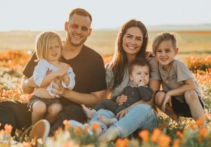

Description of the target audience
Outdoors people or anyone who who check in advance how is the weather going to be like before going anywhere.
Two personas
Milena
-Milena walks 5 km to get to the nearest bus stop and get in the the right bus that will take her to
her job.
-She does not want to get soaked by the rain or burned by the sun.
-She always looks the weather before heading to the bus stop.
-She is in her early twenties.
-Lives far away from her workplace.
>
Scenarios
-Will tomorrow rain? Should I bring an umbrella? I do not want to get soaked by the rain.
-I wish I knew if tomorrow will rain or not. If it rains I have to wake up early to not get caught in
the traffic and arrive on time at my first class.
-I wonder if today is going to be sunny all day. Should I bring my sunscreen just in case?
-I hope today does not snow. It is way too cold already and I do not have the right boots for it.
-For once, I would like to know if it is gonna be warm or rain all day long. I have to arrive early for
work meeting
Melinda

-She always dresses according to what the weather it is going to be like.
-She is always saying she is not that young to get soaked by the rain.
-She is cautious and never leaves home without checking the weather.
-She lookes after her own health and her family's health.
-Melinda is a woman over 35.
-Melinda has 3 kids and enjoys doing indoor activities with them.
Scenarios
-Is it gonna be warm today? The kids might not need these coats after all.
-Mmm, is it gonna be chilly or snowy this weekened? The kids might need more coats that I packed them
for their camping trip.
-Melinda does not have any idea if it is gonna rain or not tomorrw. She will just bring a couple of
umbrellas in case it does.
-Melinda and her kids have decided to go to the nearest lake but are not how is the weather like
there.
-Melinda is bringing with her a pile of coats and blankets because she is unsure how cold is gonna be
once she and her family arriva at the vabin.
Melinda
-She always dresses according to what the weather it is going to be like.
-She is always saying she is not that young to get soaked by the rain.
-She is cautious and never leaves home without checking the weather.
-She lookes after her own health and her family's health.
-Melinda is a woman over 35.
-Melinda has 3 kids and enjoys doing indoor activities with them.
Scenarios
-Is it gonna be warm today? The kids might not need these coats after all.
-Mmm, is it gonna be chilly or snowy this weekened? The kids might need more coats that I packed them
for their camping trip.
-Melinda does not have any idea if it is gonna rain or not tomorrw. She will just bring a couple of
umbrellas in case it does.
-Melinda and her kids have decided to go to the nearest lake but are not how is the weather like
there.
-Melinda is bringing with her a pile of coats and blankets because she is unsure how cold is gonna be
once she and her family arriva at the vabin.